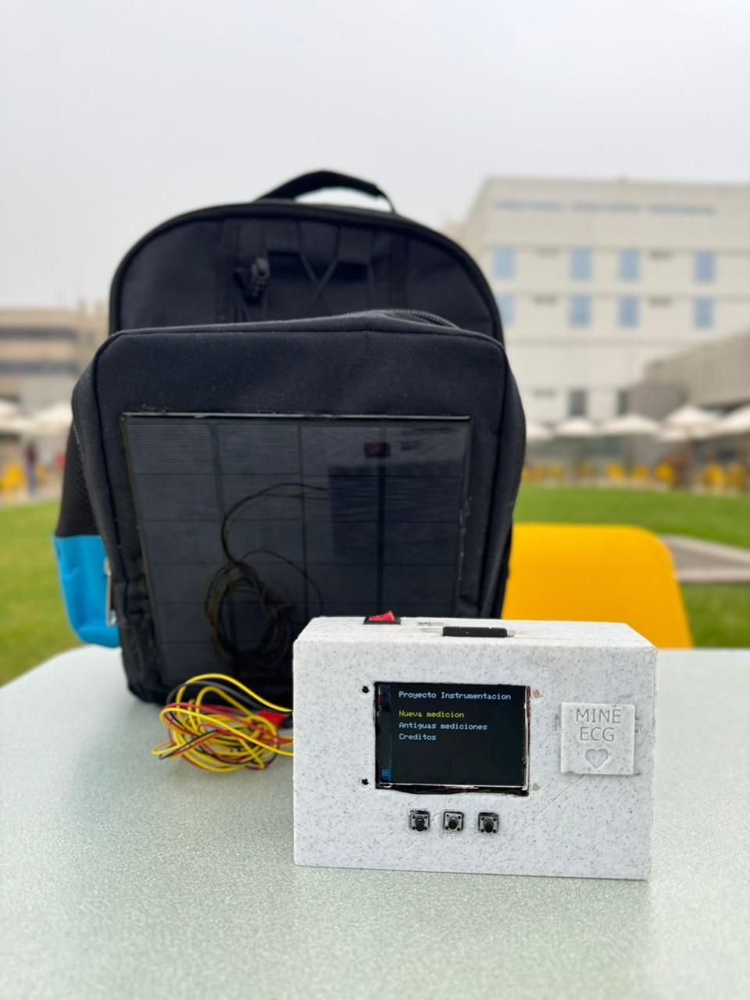
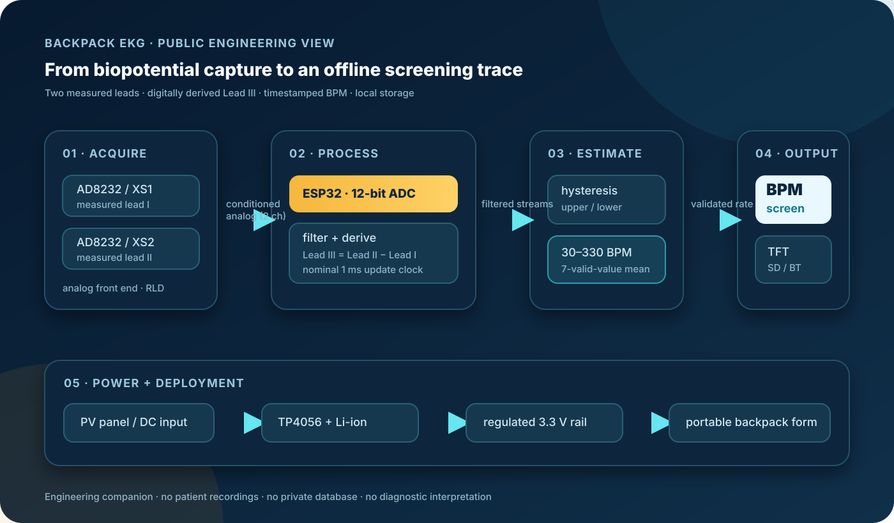
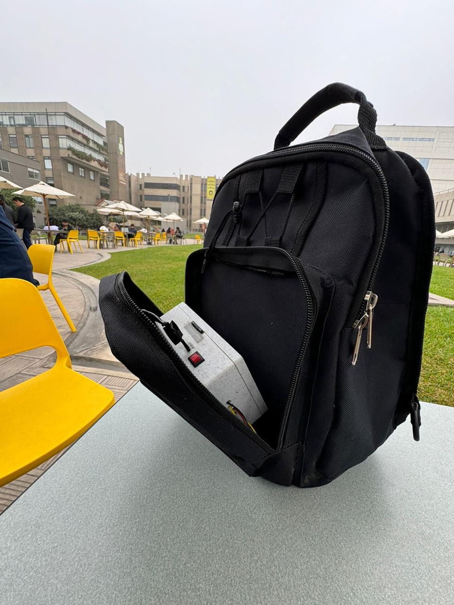
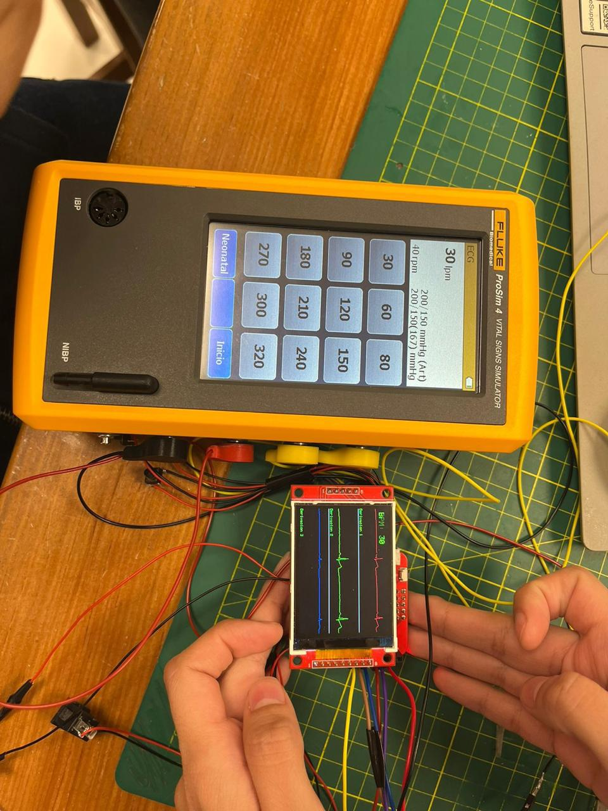
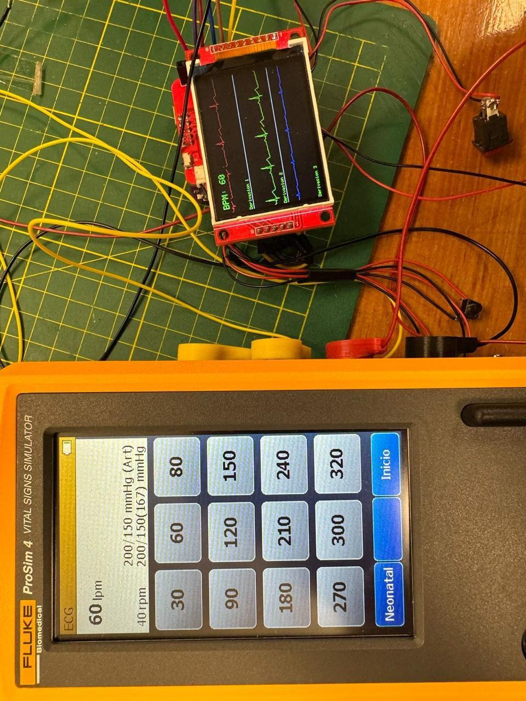
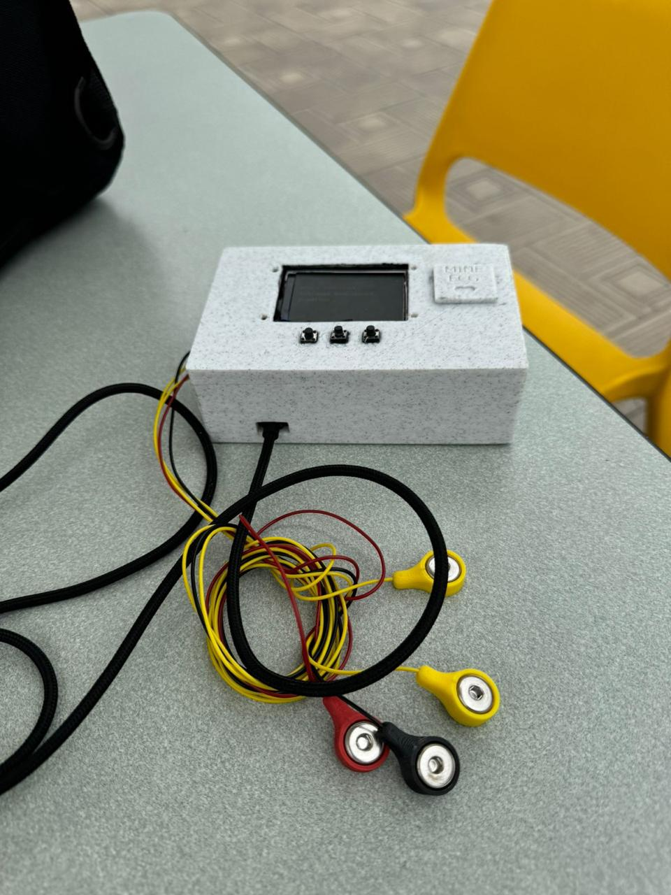
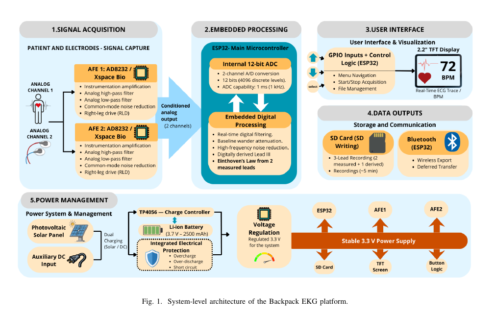
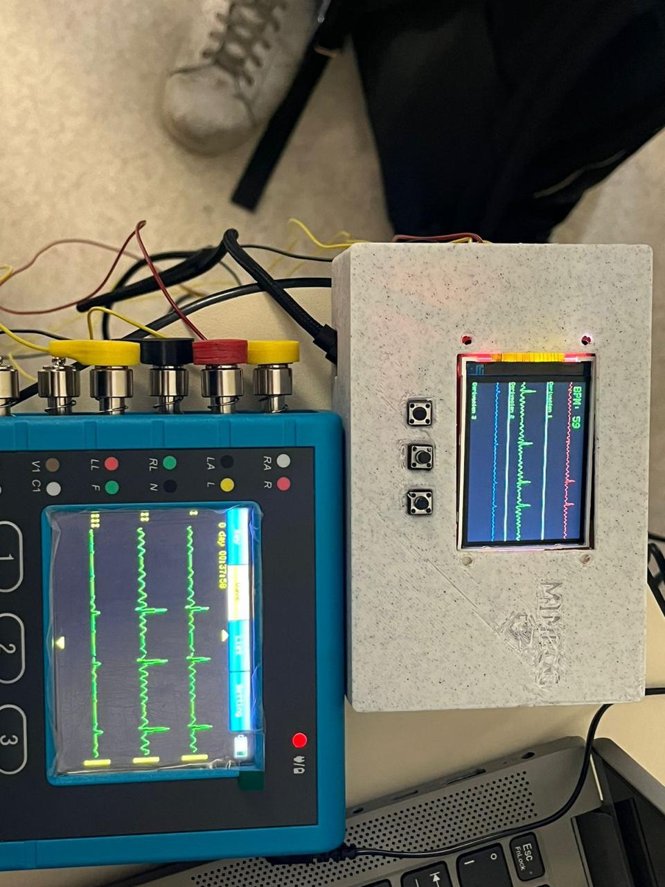

PUBLIC ENGINEERING COMPANION · 2026
A portable signal chain for places the grid does not reach.
Backpack EKG combines two measured biopotential channels, a digitally derived third lead, on-device BPM estimation and offline logging in a field-ready form factor.
ESP32 + Xspace Bio v1.0Screening-orientedNo private data

prototype / field form01
01 / SYSTEM VIEW
One chain, separated by responsibility.
Acquisition, estimation, display, storage and power are documented as independent layers so the timing-critical path stays inspectable.

Two measured channels
AD8232 front ends acquire two leads through the Xspace Bio v1.0 board. The third trace is derived digitally with the Einthoven relation.
lead_III = lead_II - lead_ITiming stays upstream
The acquisition task timestamps samples near the 1 ms update loop. TFT refresh and SD writes are throttled independently.
sample clock ≠ display clockPublic by design
The repository contains reusable engineering, synthetic tests and project media — never the database, calibration files or human recordings.
release = code + context02 / BPM ENGINE
The useful trick was the hysteresis.
The historical project routine used a threshold crossing as a stable beat event instead of depending on a perfect geometric maximum. The new implementation keeps that idea and makes every guard explicit.
BPM = 60,000 / Δtbeat
- Register one event at the upper-threshold crossing.
- Latch the detector while the signal remains elevated.
- Re-arm only after the lower threshold is crossed.
- Average the last seven valid intervals.
upper > lowervalid hysteresis direction
30–330 BPMinterval acceptance window
timestampeddisplay delay is decoupled
synthetic testsno clinical data in repo
python -m unittest discover -s tests -p "test_*.py"
g++ -std=c++17 -Wall -Wextra -pedantic \
tests/test_bpm_cpp.cpp -o /tmp/test_bpm_cpp
/tmp/test_bpm_cpp03 / PROJECT GALLERY
Built to be carried, tested and seen.
Selected project photographs and a publication-derived architecture view. No raw waveforms or human data are released here.






04 / ATTRIBUTION
Credit the work. Keep the boundary clear.
This companion points back to the publication and the people who built the project, while keeping unpublished or private material out of the public tree.
Read full credits →PAPER AUTHORS
Fabian A. Nana
Andrea Razuri-Madrid
Alvaro Cigaran
Nadira Oviedo
Bruno Tello
Adrian Gutierrez
Leslie Y. Cieza
XStudio Lab / XSpace
Access to Xspace Bio v1.0